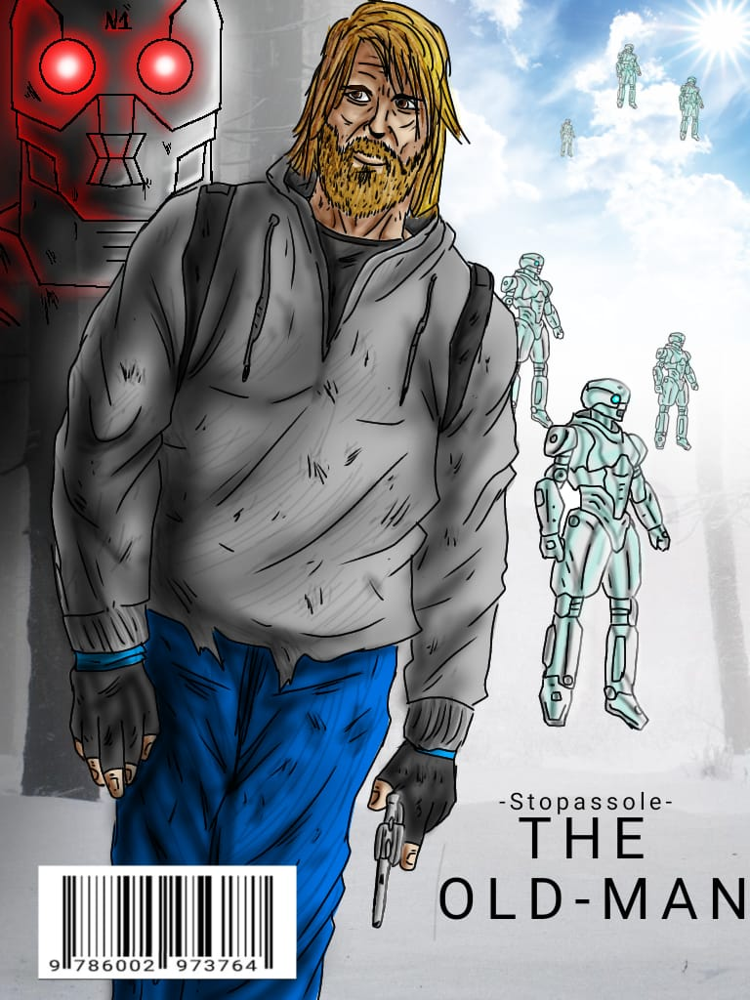
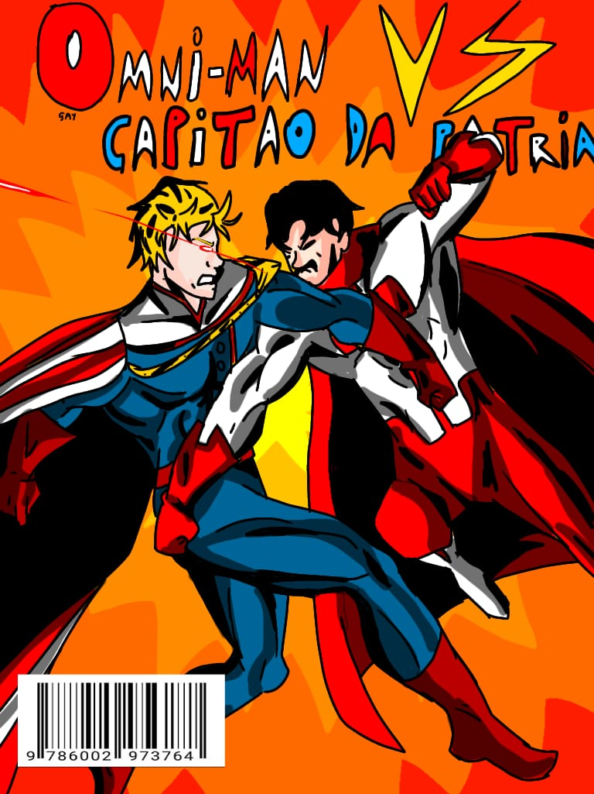
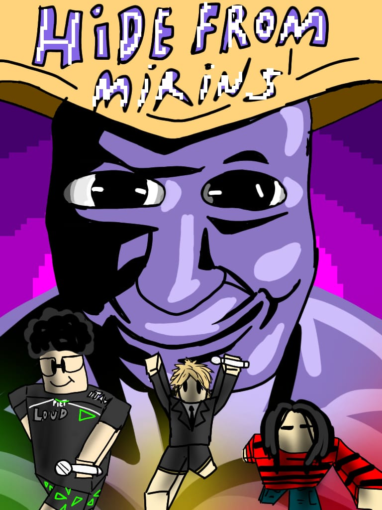

Oldman
Sinopse
Em um mundo cibernético pós-apocalíptico, um garoto de 15 anos sobrevive a uma explosão que destrói sua cidade e leva tudo o que ele conhecia. Trinta e um anos depois, ele descobre a origem dos robôs que dominam o mundo e inicia uma jornada para revelar o responsável pela tragédia que marcou sua vida.

Capitão pátria vs Omni man
Sinopse
Dois titãs colidem em uma batalha brutal. Força contra força, ideologia contra ideologia. Em um confronto sem limites, apenas um poderá se provar superior.

Eraldragons
Sinopse
Um grupo de jovens vindos de outro universo se depara com um guerreiro extremamente poderoso — e o confronto termina em perda. Determinados a reverter o destino, eles partem em busca de uma lendária forma de ressuscitar seu amigo. Com a ajuda de um velho mestre excêntrico, uma jornada caótica e cheia de desafios está prestes a começar.

Guardians of Santuary
Sinopse
Conhecidos como os “irmões da paz”, esse grupo protege os fracos e enfrenta ameaças que colocam o mundo em risco. Unidos por um ideal, eles buscam sempre uma alternativa melhor antes da batalha — mas, quando necessário, lutam com tudo para manter o equilíbrio e proteger aqueles que não podem se defender.

Hide from Mirins
Sinopse
Inspirado em um jogo de terror, a história coloca sobreviventes contra uma ameaça implacável: um assassino conhecido como Mirin. Em um jogo mortal de perseguição e estratégia, ninguém está seguro — e sobreviver é a única vitória possível.

Jackson vs Mercury
Sinopse
Dois ícones se enfrentam em um duelo musical lendário. Sem jurados, sem regras — apenas o público decide. De um lado, o auge de Michael Jackson. Do outro, a presença inigualável de Freddie Mercury. Quem conquista o palco?